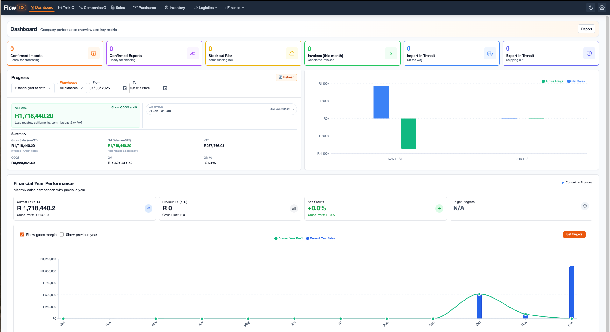

Built For Real Operations
FlowIQ fits businesses where timing, costing, and stock movement all affect margin.
It gives operators and managers a clearer picture of what is happening now and what needs attention next.
FlowIQ turns messy imports, disconnected stock data, and margin guesswork into one control layer for importers, distributors, and manufacturers who are done running on spreadsheets.
Workflow
Purchase order → shipment costing → inventory → invoice margin.
One connected operating story instead of five disconnected tools.

What changes
2-day
month-end instead of a week of reconciliations
Live
margin visibility before pricing decisions are made
Before FlowIQ
Spreadsheet chaos
Freight, FX, supplier pricing, and stock decisions are split across files and inboxes.
Margin risk
Too late to react
You only find the leak after goods are sold or month-end closes.
Ops friction
Manual handoffs everywhere
Teams keep re-entering the same operational data into different systems.
Leadership pain
No control room
There is no single surface showing what is happening, what slipped, and what to do next.
Built For Real Operations
It gives operators and managers a clearer picture of what is happening now and what needs attention next.
What Gets Cleaner
Shipment costing, inventory control, and pricing decisions stop living in disconnected files and side processes.
What Teams Get
A calmer workflow, clearer accountability, and faster answers when something shifts in the supply chain.
Step 01
Capture the shipment story
From PO to freight and FX, every cost has context before goods land.
Step 02
Turn movement into visibility
Inventory, sales, margins, and exceptions all stay connected instead of drifting apart.
Step 03
Make smarter next moves
Forecast demand, defend price, and decide with data while there is still time to act.
Track supplier pricing, freight, duty, and FX inside the same workflow so your landed cost is not a spreadsheet guess after the fact.

FIFO, multi-warehouse movement, BOM, and kitsets are already hard. FlowIQ keeps the inventory picture connected to what it is worth and what it is about to do.

ForecastIQ gives buyers and operators a real reason to stay inside the system: it translates history and movement into better replenishment and pricing decisions.

Teams adopt faster when the product already feels organized, trustworthy, and operationally mature from the first visit.
Xero sync
Journals, mappings, and cleaner finance handoff.
CSV import/export
Useful when teams are still transitioning off old workflows.
API-ready foundations
Built to play nicely with adjacent operational systems.
Document capture
Keep operational evidence attached to the work itself.
Start a trial if you already know the pain, or book a guided demo if you want the workflow mapped to your operation.